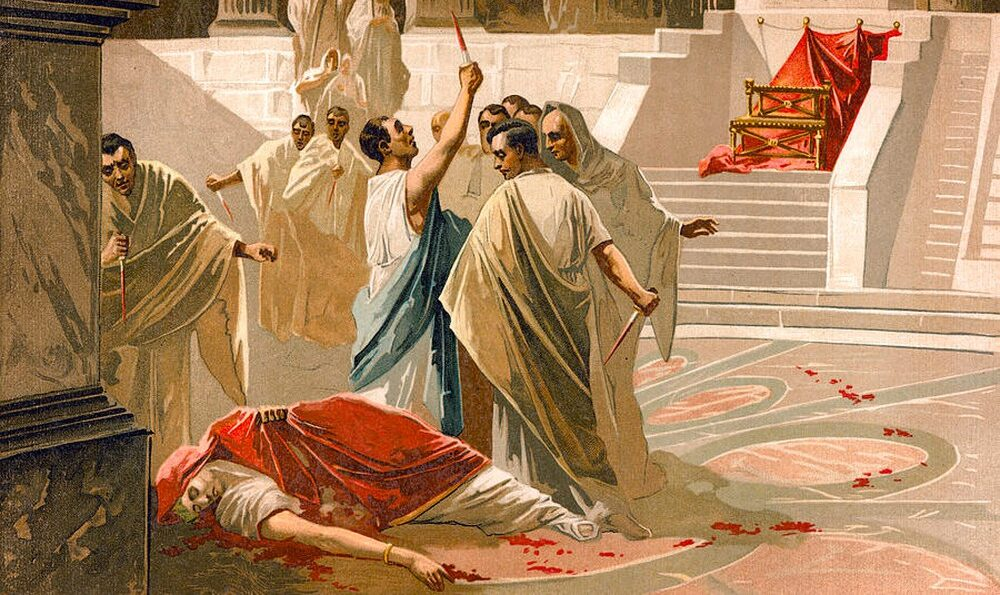
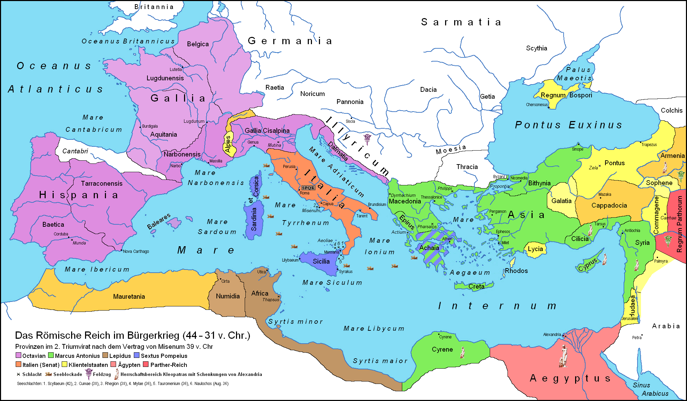
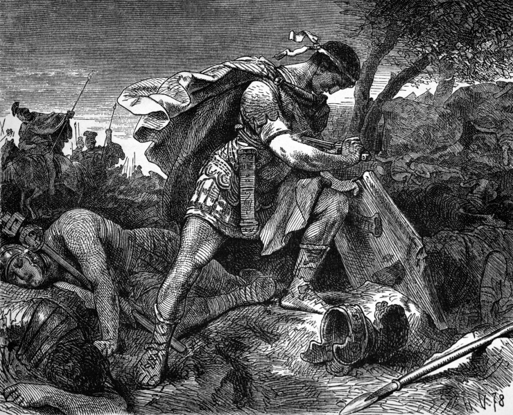
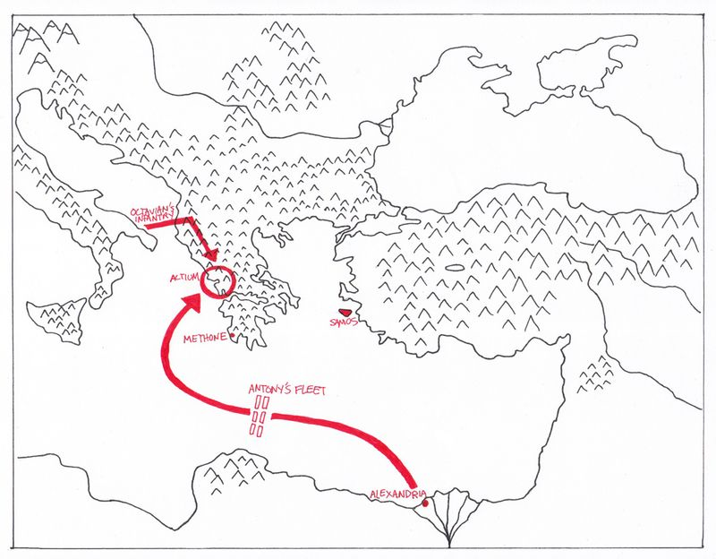

1. The Death of Caesar
Julius Caesar was the most powerful man at the end of the Roman Republic.
Caesar had made many enemies among Rome's powerful families by pushing for reforms (changes) that would benefit roman soldiers, and the poor of the cities. This included setting up a system of free food for the poor.
While Caesar was away, fighting in Gaul (modern France) his enemies in Rome ordered his arrest. Caesar returned to the city with his legions. This was a huge no-no since carrying weapons was banned in and around the city of Rome
This caused a civil war (a war within one country) between Caesar and the supporters of a different powerful politician, Pompey. When Caesar won, he seemed to now have total power. Many of his surviving enemies (and even some of his former friends) were worried that he would make himself king next!
These worried men carried out a conspiracy (plot by a group of people) to have Caesar murdered. He was killed during a meeting of the senate.
Division of Territory

Map: Gaul, Hispania, Africa, etc. divided between Octavian, Antony, Lepidus.
2. The Rise of the Triumvirate
After the death of Caesar, his adopted son Octavian and his former general Mark Antony both tried to take control over the people fighting for revenge for Caesar.
In the end, Octavian and Antony agreed to share. Together with another of Caesar's former followers, Lepidus they agreed to split the empire between themselves and fight together against Caesar's killers.
This was called the "Triumvirate" because it had three leaders (tri). Octavian took the west (purple), Antony took the east (green) and Lepidus took the south (brown).
3. The Liberators' War

The fall of the "Liberators" at Phillipi
Together, Antony and Octavian invaded Greece where the "Liberators" who killed Caesar were hiding out.
The two sides fought at the First Battle of Phillipi which mostly was a stalemate.
The two armies then met again a few days later, at the Second Battle of Phillipi. This time, Caesar's main killer, Brutus and his army were defeated. Brutus committed suicide before Octavian could capture him.
With Brutus dead and the Liberators defeated, there was now nothing in the way of the "Triumvirate" ruling the entire Empire.
4. The War between Octavian and Antony/Cleopatra

alt="Map of the war between Octavian and Antony/Cleopatra" class="is-rounded">Naval battle of Actium (31 BC) and the campaigns in Greece/Egypt.
Details about the final war (32–30 BC) will go here.
Propaganda, the Donations of Alexandria, and the Battle of Actium.
- Antony and Cleopatra's alliance
- Octavian's campaign in the East
- Suicides of Antony and Cleopatra; Egypt becomes a Roman province